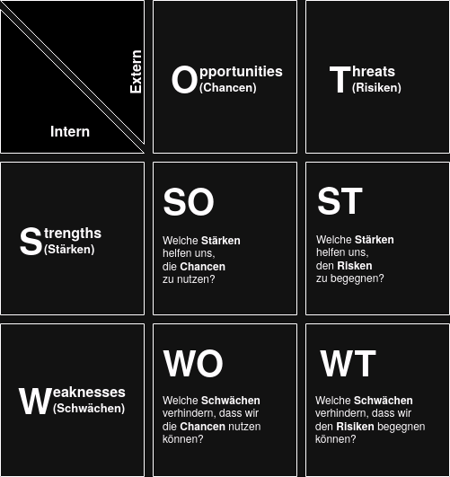
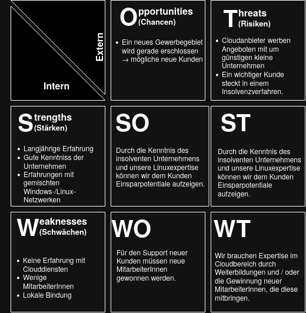

KOM-ITIL
Die SWOT-Analyse ist ein nützliches Werkzeug, um
Sie ermöglicht es, eine fundierte Entscheidung über die strategische Ausrichtung zu treffen und potenzielle Problembereiche zu erkennen.

Abbildung 1: SWOT-Portfolio
Beispiel: Die Max & Moritz GmbH bietet seit vielen Jahren IT- Support für kleine lokale Unternehmen an: Einrichtung von Servern, Arbeitsplatzrechnern, Netzwerkeinrichtung, Datensicherung.

Abbildung 2: Beispiel SWOT-Portfolio